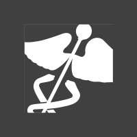
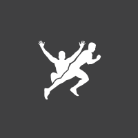
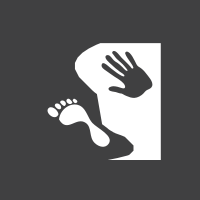

<!--
  Generated template for the ScreenHistoryPage page.

  See http://ionicframework.com/docs/components/#navigation for more info on
  Ionic pages and navigation.
-->
<ion-header color="dark">
  <ion-navbar color="dark">
    <button ion-button menuToggle>
      <ion-icon name="menu"></ion-icon>
    </button>
    <ion-title>Screen History</ion-title>
  </ion-navbar>
</ion-header>


<ion-content>
  <ion-list>
    <button ion-item (click)="openModal({charNum: 0})">
      <ion-avatar item-start>
        
      </ion-avatar>
      FMS
      <p><small>Jul 1, 2017</small></p>
    </button>
    <button ion-item (click)="openModal({charNum: 1})">
      <ion-avatar item-start>
        
      </ion-avatar>
      SFMA
      <p><small>Jul 5, 2017</small></p>
    </button>
    <button ion-item (click)="openModal({charNum: 2})">
      <ion-avatar item-start>
        
      </ion-avatar>
      FCS
      <p><small>Jul 20, 2017</small></p>
    </button>
    <button ion-item (click)="openModal({charNum: 3})">
      <ion-avatar item-start>
        
      </ion-avatar>
      YBT
      <p><small>Jul 25, 2017</small></p>
    </button>
  </ion-list>


</ion-content>